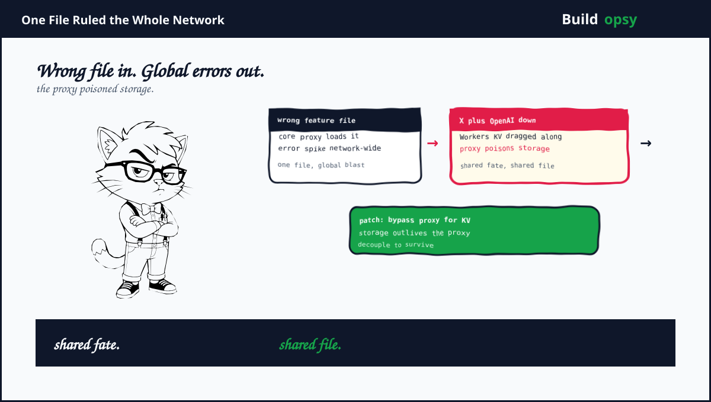
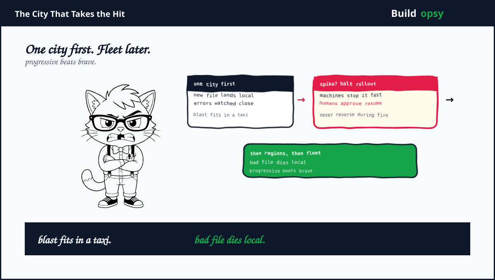

1. November: Every Server, Same Mistake
Cloudflare runs one of the largest edge networks on earth, hundreds of cities sharing one software stack. That uniformity is the business model. It is also the blast radius. In November 2025 the fleet began loading an incorrect internal feature file. Every proxy did the same wrong thing at the same time. Error responses spiked across the network within minutes. X went dark. OpenAI services degraded. Spotify stuttered. The internet's front door jammed on the same bad hinge everywhere at once.
The casualties extended past websites. Workers KV, the key-value store, plus Access authentication both depend on the core proxy path. When the proxy choked, storage plus login choked with it. Products with no logical connection to a feature file failed because they shared a corridor with it. Engineers ended the incident with a patch that bypassed the core proxy for Workers KV traffic. Storage learned to walk around the proxy. The corridor stayed dangerous.
2. Shared Fate, Quantified
Model the blast radius. A few hundred points of presence, each serving thousands of customer properties. One bad file reaches all of them through the same distribution channel that makes the network manageable. If each property averages even modest traffic, the error spike touches a meaningful fraction of global web requests within one propagation delay. Centralized control planes trade per-machine uniqueness for fleet-wide coherence. Coherence means correlated failure. There is no third option.
The KV coupling deserves its own line. Storage behind the request proxy inherits proxy fate. Every millisecond the proxy spends failing is a millisecond storage cannot serve, even though the bytes sit healthy on disk nearby. The bypass patch proved the point architecturally. Traffic that never needed the proxy should never have traversed it. Separate data paths from control paths, physically where possible, topologically at minimum. Shared fate should be a choice with a diagram, not a default with a surprise.
December added a footnote in the same handwriting. A Web Application Firewall buffer change, shipped as part of unrelated security work, disrupted customers again. Then February 2026 brought the BYOIP incident. A pipeline change withdrew roughly 1,100 customer IP prefixes from global routing for over six hours. Three incidents, three different triggers, one shape. Changes propagate fast. Validation propagates slow. The bill is hiding in the asymmetry.
Error budget math makes it visceral. A network-wide error spike lasting tens of minutes can burn a quarterly budget before lunch. At 99.99 percent, the monthly allowance is about 4 minutes. One bad file with fleet-wide reach spends years of budget in an hour. Uniformity without staged rollout is budget arson with automation.
4. What Went Wrong in the Design
Configuration had no blast radius. One file reached the entire fleet through one channel with no staged rollout, no canary geography, no automatic halt on error-rate deviation. Config distribution needs the same progressive delivery as code. Especially config.
Storage rode the request path. Workers KV traversed the core proxy by default. A storage system should serve reads on the shortest possible path. Every unnecessary hop is a borrowed failure mode with interest.
Validation lagged propagation by design. Publishing to hundreds of cities takes seconds. Detecting fleet-wide error deviation plus halting rollout takes minutes at best. The race is structural. Whoever shortens detection wins. Whoever lengthens it writes incident reports.
Three incidents shared one asymmetry. Feature file, firewall buffer, address pipeline. Different teams, different quarters, identical pattern. Fast propagation plus slow validation. Organizations repeat shapes until the shape gets a name plus an owner.

5. What Should Happen Instead
First, roll out configuration like code. Canary cities, then regions, then the fleet, with automatic halt on error-rate deviation. A bad file should die in one city, not debut worldwide. Progressive delivery is not caution. It is arithmetic.
Second, decouple storage from the request proxy permanently. The emergency bypass should become the architecture. Audit every data path for proxy dependence it never needed. Each removal shrinks the next blast radius for free.
Third, make error deviation halt propagation automatically. Publish pipelines need circuit breakers keyed to fleet error rates. Humans approve resumption. Machines execute the stop. Never the reverse during a spike.
Fourth, name the pattern across incidents. Feature file, firewall, addresses. One review board, one asymmetry log, one mandate. Separate postmortems for linked shapes fragment accountability. The fleet is one system. Review it as one.
Fifth, test the bypass before the fire. Disaster paths that only exist as patches get written under pressure plus reviewed never. Drill proxy-bypass failover quarterly. The corridor will fail again. The detour should already be paved.
6. The Verdict
Cloudflare published honestly about November, which deserves credit most vendors withhold. The account names the file, the spike, the coupled products plus the bypass. Transparency this specific is rare. It also indicts the design more clearly than any critic could. When the vendor's own report reads like an architecture review, believe it.
The lesson travels to every uniform fleet. Kubernetes clusters pulling one image tag. CDN fleets sharing one control plane. Serverless platforms on one scheduler. Coherence is a feature until it is a failure mode. Decouple data from control. Stage every rollout. Watch error deviation like revenue. Or load the wrong file everywhere at once. The network is fast. Mistakes ride free.
One file. Every server. The proxy poisoned storage. Then storage learned to walk.
Sources and Method
This postmortem follows Cloudflare's published incident account plus independent reporting on the November 2025, December 2025 and February 2026 incidents. Tracker tallies are third-party claims. Cost framing is modeled scenario math.